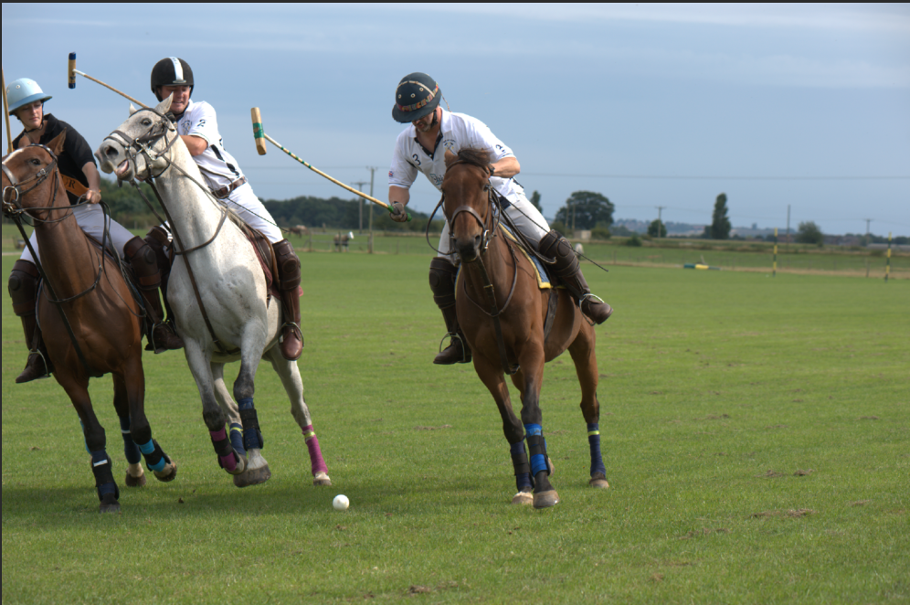
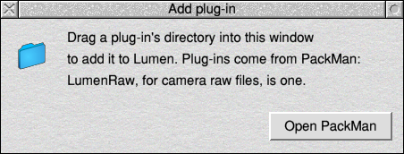
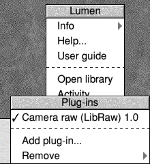
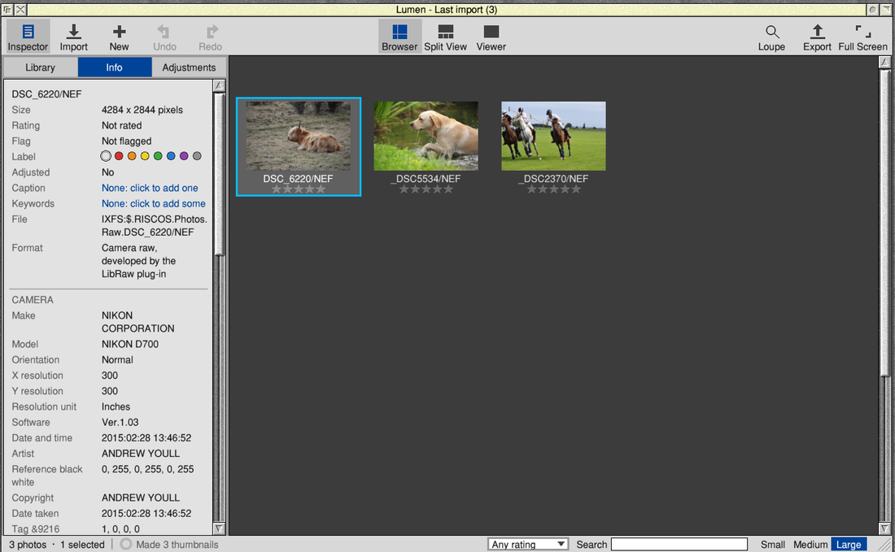
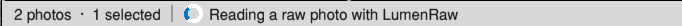
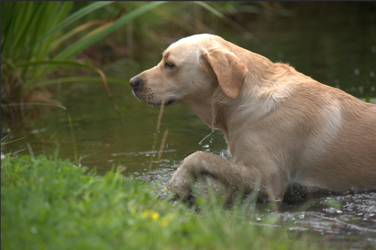
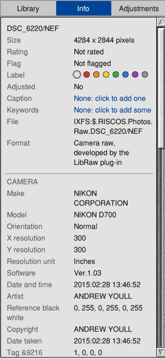
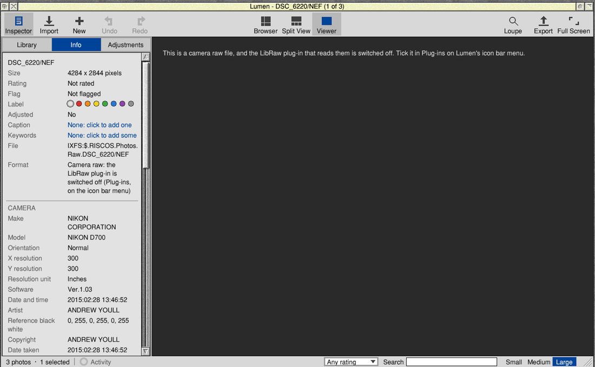

Introduction
Most cameras can save their photos in two ways. A JPEG is a finished picture: the camera has already decided the colours, the brightness and the sharpness, and thrown away whatever it didn't need. A raw file is what the sensor actually recorded, before any of those decisions. It holds more detail in the bright and dark parts of a scene, and leaves the decisions to you.
The catch is that every camera maker has its own raw format, and most have several. Lumen doesn't read raw files itself. It hands them to a small separate program, LumenRaw, which is built on LibRaw, a free library that knows the raw files of 1,258 cameras. LumenRaw is Lumen's plug-in for camera raw files.
Once it's installed, you won't often notice it: raw photos simply appear in Lumen's library beside your JPEGs, and you rate, adjust, export and print them in the same way. This guide explains what happens behind the scenes, how to install and look after the plug-in, and which cameras it works with.
About this guide
This guide is about the plug-in. Everything else about Lumen (the library, the adjustments, exporting) is in the Lumen User Guide, which comes with Lumen: choose User guide from the menu on Lumen's icon bar icon.
The pictures are screenshots of Lumen 0.0.26 with LumenRaw on RISC OS 5. The raw photos in them are by the author, Andrew Youll, straight from his Nikon D700.
New in LumenRaw 1.1
LumenRaw 1.1 is built on LibRaw 0.22.3, the newest LibRaw (October 2026), in place of 0.21.4. It knows 77 more cameras, mostly from 2023 and 2024: among them the Canon EOS R8, R50, R6 Mark II and R5 Mark II, the Nikon Z 8, Z f and Z 6 III, the Sony A7R V, A7C II and A6700, the Fujifilm X-T5, X-H2 and X100VI, the OM System OM-5, Panasonic's GH6 and GH7, and iPhones up to the 15 Pro Max. LibRaw's 0.22 releases also fix many ways a damaged or deliberately broken raw file could upset it.
What we assume you know
That you have Lumen and know your way round it a little: how to import photos and open one in the Viewer. You should know the three mouse buttons (Select, Menu and Adjust) and how to drag a directory from a Filer window. You don't need to know anything about raw files.
The boxes in this guide
Where to start
If you only want to know whether your camera is supported, go straight to Chapter 8, or look it up in Appendix A. To install LumenRaw, go to Chapter 2.
Part I: Getting StartedWhat the plug-in is, and installing it
1 What LumenRaw does
Lumen asks LumenRaw for two things.
- A quick picture for the thumbnail. Almost every raw file has a small JPEG inside it: the preview the camera shows on its screen. LumenRaw takes that out, which takes a moment, and Lumen makes the thumbnail from it. If a file has no preview, LumenRaw develops a small copy instead.
- The photo itself. When you open a raw photo in the Viewer, zoom in, or export or print it, LumenRaw develops the raw data into a full-colour picture. It uses the white balance the camera chose and the camera's own colour description, so the photo looks as the camera intended, and gives the result to Lumen. From then on Lumen treats it like any other photo.
Each time, LumenRaw also reads the camera's details for Lumen: the camera and lens, the exposure, the date, and which way up the camera was held.
What you can do with raw photos in Lumen
- Import them, from a camera card or a directory, with or without JPEGs alongside.
- See them as thumbnails, rate, flag, label and keyword them, put them in albums and stacks.
- Look at them in the Viewer, at 100% and with the loupe.
- Adjust them with all of Lumen's tools, retouch and brush them.
- Export them as JPEG or PNG, and print them.
What LumenRaw doesn't do
- It never changes or writes to your raw files. Like all of Lumen, it only reads them.
- It doesn't save raw files, or convert them to DNG.
- It doesn't correct lenses (distortion and dark corners). Lumen's Vignette adjustment can lighten dark corners by hand.
- It can't open every raw file ever made: see Chapter 9.
2 Installing LumenRaw
What you need
- Lumen 0.0.26 or later (earlier versions work, but exported raw photos of 1024 pixels or less came from the camera's preview). LumenRaw lives inside Lumen, in
!Lumen.Plugins.LibRaw. - The same computer Lumen needs: RISC OS 5.30 or later on a Raspberry Pi 4, 400 or CM4 (other ARMv7 machines should work), with the SharedUnixLibrary and ARMEABISupport modules from PackMan.
- Memory: developing a raw file takes a lot of memory for a few seconds, about 300 MB for a 24 megapixel camera and more for bigger sensors. A Raspberry Pi 4 with 2 GB or more is comfortable.
With PackMan
- Open PackMan and find the LumenRaw package (search for LumenRaw).
- Install it. PackMan puts it inside Lumen, in
!Lumen.Plugins.LibRaw. - If Lumen is running, quit it and start it again. Lumen looks for plug-ins when it starts.
Lumen's Add plug-in window has an Open PackMan button that starts PackMan for you.
By hand, from the zip file
LumenRaw also comes as a zip file, LumenRaw-1.1.zip. Inside it, the plug-in is laid out as it goes into Lumen: !Lumen.Plugins.LibRaw.
- Open the zip file (with SparkFS, or unzip it into a directory).
- Open the
!Lumendirectory inside it: hold Shift and double-click it, then double-clickPlugins. You'll see a directory calledLibRaw. - In Lumen, choose Plug-ins → Add plug-in... from the menu on Lumen's icon bar icon.
- Drag the
LibRawdirectory into the Add plug-in window. Lumen copies it into its own Plugins directory, and uses it at once, without restarting.

You can also drag the LibRaw directory straight onto Lumen's main window.
Checking it's working
Choose Plug-ins from the menu on Lumen's icon bar icon. LumenRaw is listed as Camera raw (LibRaw) 1.1, with a tick when it's on.

/NEF, /CR2, /CR3, /ARW, /RAF, /ORF, /RW2 or /DNG) and drag it into Lumen's window. A thumbnail should appear within a second or two. Double-click it: after a moment the photo sharpens as LumenRaw develops it.Updating
Install the new version the same way: PackMan updates it in place. If you drag a new LibRaw directory into the Add plug-in window, Lumen says there's a plug-in of that name already and asks whether to Replace it. Quit and restart Lumen afterwards to be sure it's using the new one. Your library, ratings and adjustments aren't affected.
Part II: Raw Photos in LumenImporting, looking, adjusting and exporting
3 Bringing raw photos in
Import raw photos as you would any others: drag a directory, a camera card or the files into Lumen's window, or use Import on the toolbar. Lumen recognises raw files by what's in them, and by their file name ending (Appendix B lists the endings).

Thumbnails of raw photos are quick, because they come from the camera's own preview rather than from developing the raw data.
Raw and JPEG together
Many cameras can save each photo twice: a raw file and a JPEG with the same name. Lumen imports both, as two photos side by side. If you'd rather work with one of them:
- Type
nef(orcr2,arw, and so on) in the Search box to show only the raw files, because Lumen searches photos' names and the ending is part of the name. Typejpgfor the JPEGs. - Or stack each pair (select both, Ctrl+G), with the one you prefer as the pick. See the Lumen User Guide, Chapter 6.
4 Looking at raw photos
Double-click a raw photo, as for any other. Lumen shows the camera's preview straight away and asks LumenRaw to develop the photo. While it does, the bottom bar says Reading a raw photo with LumenRaw:

When it's done, the developed photo replaces the preview. This takes a few seconds for a typical camera, longer for big sensors.

Here the two are close. With other cameras and settings they can look quite different: the camera made its preview for its own small screen, with its own sharpening, contrast and picture style; LumenRaw develops what the sensor recorded, and leaves the look to you.
Half size and full size
To be quick, LumenRaw develops at half size when that's still big enough for what Lumen needs. A 24 megapixel camera gives a 3000 pixel wide picture at half size, which is plenty for the Viewer. For 100% and the loupe, Lumen asks for the full size, which takes longer, so the first zoom into a raw photo has a short wait. Exports and prints are developed at the size they need: half size for a small export, full size for a big one.
Only thumbnails use the camera's preview. Everything you see bigger, export or print is developed from the raw data.
5 Adjusting, exporting and printing
A developed raw photo is just a photo to the rest of Lumen. Everything in the Adjustments tab works on it: white balance, exposure, highlights and shadows, curves, colour, black and white, noise reduction, sharpening, cropping, retouching and brushing. Export and print work the same too.
Getting the most from raw
- White balance starts from the camera's own choice. If the colours are off, use Pick on something white or grey, as for a JPEG.
- Noise: raw files show the sensor's noise honestly, where the camera would have smoothed a JPEG. Photos taken in poor light usually need some Noise Reduction: start with Colour at about 30.
- Sharpening: a raw photo is softer than the camera's JPEG, for the same reason. A little Sharpen (Amount 30 to 50) makes up the difference.
- Shadows often have more in them than they seem to. Try Shadows at 30 or 40.
6 What the Info tab tells you
Select a raw photo and click the Info tab. The Format line says how Lumen read it:
| Format says | Meaning |
|---|---|
| Camera raw, developed by the LibRaw plug-in | All's well: LumenRaw is installed and on. |
| Camera raw: the LibRaw plug-in is switched off (Plug-ins, on the icon bar menu) | LumenRaw is installed, but switched off (Chapter 7). |
| Camera raw: needs the LibRaw plug-in (LumenRaw, from PackMan) | LumenRaw isn't installed (Chapter 2). |

Below that are the camera's details. Lumen reads them from the raw file itself; LumenRaw adds the photo's true size and which way up it was taken, which it knows better for some makes.
Part III: Looking After the Plug-inSwitching it off, adding and removing
7 Switching it off, adding and removing
Choose Plug-ins from the menu on Lumen's icon bar icon (or from the main menu over the Browser).
Switching it off and on
Choose Camera raw (LibRaw) 1.1 to switch it off: the tick goes. LumenRaw stays installed, but Lumen doesn't use it, and remembers that next time it starts. Choose it again to switch it back on.
While it's off, raw photos keep their thumbnails, stars, albums and adjustments, but opening one shows a message instead of the photo:

A raw photo that's already showing in the Viewer stays as it is when you switch; the change shows from the next photo you open.
Adding a plug-in
Add plug-in... opens the window you drag a plug-in's directory into (Chapter 2).
Removing it
Remove → Camera raw (LibRaw) deletes LumenRaw from Lumen, after asking. Your raw photos stay in the library, with their stars and adjustments; they just can't be opened until you install it again.
Part IV: CamerasWhich ones work, and what to do if yours doesn't
8 Which cameras work
LumenRaw 1.1 uses LibRaw 0.22.3, which lists 1,258 cameras from about 80 makers, from early digital cameras to models released in 2024. The whole list is in Appendix A. Here's a summary of the makers with the most:
| Maker | Models | For example |
|---|---|---|
| Canon | 171 | EOS R1, EOS R5 Mark II, EOS R6 Mark II, EOS R8, EOS R50, EOS R10, EOS 5D Mark IV, EOS 90D; many PowerShots |
| Sony | 115 | A1, A9 III, A7R V, A7 IV, A7C II, A6700, ZV-E1; RX100 series |
| Nikon | 110 | Z 9, Z 8, Z f, Z 6 III, Z 30, D850, D7500, D3500; Coolpix |
| Fujifilm | 88 | X-T5, X-H2, X-H2S, X100VI, X-T50, X-S20, GFX 100 II |
| Panasonic | 82 | DC-GH7, DC-GH6, DC-S5 MkII, DC-G9 Mark II, DC-S9, DMC-LX100 |
| Olympus / OM System | 79 | OM-1 Mark II, OM-5, E-M1 Mark III, E-M10 Mark IV, TG-7 |
| Leica | 61 | M11, Q3, SL3, D-Lux8 |
| Pentax | 44 | K-3 Mark III (and Monochrome), K-1 Mark II, KF, KP |
| Samsung, Kodak, Casio | 44, 42, 53 | Galaxy phones, NX cameras; older compacts and DSLRs |
| Medium format | 123 | Hasselblad (to the X2D 100C), Phase One, Leaf, Mamiya, Sinar, Imacon |
| Phones and drones | – | Apple iPhone (up to the 15 Pro Max), Google Pixel (up to the 9 Pro), Samsung Galaxy S23, Xiaomi 13 Pro, DJI Mavic 3 Pro and Mini 3 Pro |
| Raspberry Pi | 2 | The Raspberry Pi Camera and Camera V2 |
D850 or X-T4. Sony cameras are listed by their model code, with the name in brackets: ILCE-7M4 (A7 IV).9 If your camera isn't listed
Camera makers bring out new models, and new raw formats, every year, and LibRaw 0.22.3's list stops at cameras from 2024. A camera that's newer than the list, or a format this build of LibRaw doesn't include, may not open at all, or may open with colours that look wrong.
Known not to work in LumenRaw 1.1
- Newer cameras, for example the Nikon Z50 II and Z5 II, Sony A1 II, Fujifilm X-M5, X-E5 and GFX100RF, Panasonic S1R II, OM System OM-3 and the iPhone 16. If your camera came out late in 2024 or later, it may not be in the list.
- Nikon's High Efficiency raw (the HE and HE* settings on the Z 9, Z 8, Z f and Z 6 III). Set the camera to lossless compressed raw instead.
- Sigma's Foveon cameras (X3F files: SD9 to SD1 Merrill, DP Merrill and Quattro). LibRaw can read these only with an extra part that LumenRaw doesn't include. The Sigma dp0 Quattro's DNG files and the Sigma fp do work.
- GoPro raw (GPR files), for the same reason.
- DNG files compressed with JPEG XL (DNG 1.7, which some newer phones and converters write). LibRaw reads these only with Adobe's DNG SDK built in, which LumenRaw doesn't include.
What you'll see
The thumbnail usually still appears, because it comes from the camera's preview, which LumenRaw can nearly always read. Opening the photo gives a message such as The LibRaw plug-in couldn't read this raw file (not a raw file Lumen can read: Unsupported file format or not RAW file).
What to do
- Convert to DNG. Adobe's free DNG Converter (for Windows and macOS) turns raw files from almost any camera into DNG files, which LumenRaw reads. Keep the converter's standard settings. If your version offers JPEG XL compression, don't choose it: this LibRaw can't read that.
- Shoot raw and JPEG until a newer LumenRaw supports your camera, and work from the JPEGs meanwhile. Keep the raw files: when support arrives, they'll open in Lumen with your stars and albums already there.
- Check the camera's settings: a lossless or uncompressed raw setting often works where a newer compressed one doesn't.
Part V: The Part of TensQuick answers
10 Ten problems and what to do about them
| Problem | What to do |
|---|---|
| "This is a camera raw file. Lumen reads raw files with its LibRaw plug-in..." | LumenRaw isn't installed. Install it (Chapter 2), then quit and restart Lumen. |
| "...the LibRaw plug-in that reads them is switched off" | Tick Camera raw (LibRaw) in Plug-ins on Lumen's icon bar menu, then open the photo again. |
| "The LibRaw plug-in couldn't read this raw file (...)" | The camera or its format isn't supported (Chapter 9), or the file is damaged. Try it from another copy, or convert it to DNG. |
| "The LibRaw plug-in stopped without finishing (perhaps out of memory)" | Developing needs a lot of memory. Quit other big programs and try again; in the Task Manager, check how much free memory there is. |
| A raw photo has no thumbnail | The file had no preview LumenRaw could read, and couldn't be developed either. Open it to see the message, which says why. |
| The photo looks different from the camera's own JPEG | Normal: the camera applies its own look to its JPEGs. Adjust to taste, or save your settings as a preset for that camera. |
| The colours look badly wrong (green or magenta) | The camera probably isn't in the list (Appendix A), so LibRaw is guessing. Convert to DNG. |
| A raw photo is on its side | Some cameras don't record which way up they were held. Turn it with [ or ] in the Viewer. |
| Raw photos are slow to open | Normal for big files: a few seconds each. Go through them with the arrow keys and rate from the previews; only the one you stop on is developed. |
| Remove says the plug-in was installed by PackMan | Use PackMan to remove it, so PackMan knows it's gone. |
11 Ten things for experienced users
- It's a command-line program.
LumenRaw thumb SRC IMAGE INFOwrites the camera's embedded preview (a JPEG, or a developed half-size PPM if there's none);LumenRaw decode SRC IMAGE INFO MAXSIDEdevelops the raw to a binary PPM (P6, 8-bit sRGB). Run with no arguments, it prints its version and LibRaw's. - INFO is a text file of
key=valuelines:width,height(before turning),orientation(as EXIF: 1, 3, 6 or 8),make,model,iso,exposure(seconds),fnumber,focal(mm),taken(YYYY:MM:DD HH:MM:SS, the camera's own clock) andlens; or a singleerror=...line. - Files appear whole or not at all. Both outputs are written under a temporary name (the name with
_tadded) and renamed when complete, INFO first, so Lumen never reads half a file. - Half size:
decodeuses LibRaw's half-size mode (each 2×2 block of sensor sites becomes one pixel, with no demosaicing, so it's fast and clean) when half the longer side is still at least MAXSIDE. Lumen asks with MAXSIDE 1600 for the Viewer, the size it needs for an export or print, and a huge size (always full) for 100%. Anything up to 256 pixels (thumbnails) usesthumb. - Development settings: the camera's white balance and colour matrix, AHD demosaicing, sRGB output, 8 bits per channel, not turned (Lumen turns it by the orientation). LibRaw's own complaints about damaged data are silenced, because any output would open a task window on the desktop; a damaged file still develops as far as it can.
- How Lumen runs it:
TaskWindow "<command>" -wimpslot 8000K -name LumenRaw -quit, one job at a time. The slot starts small and UnixLib grows it as LibRaw needs. Job files live in<Wimp$ScrapDir>.LumenRaw, which Lumen clears up. - Recognising raw files: Lumen checks the start of each file (Canon CR2 and CR3, Fujifilm RAF, Olympus ORF and Panasonic RW2 have signatures of their own), and for TIFF-based formats the name's ending as well (Appendix B). The EXIF in TIFF-based raws (NEF, CR2, ARW, DNG, PEF and others) is read by Lumen itself, so the Info tab is full even with the plug-in switched off.
- The plug-in description is the text file
!Lumen.Plugins.LibRaw.Plugin:Name,Version,Kind: raw,Program: LumenRaw,Package: LumenRawandDescriptionlines. Switched-off plug-ins are listed in<Choices$Write>.Lumen.Plugins. - This build of LibRaw (0.22.3) has no threads and no OpenMP, uses zlib and libjpeg for DNG's deflate and lossy compression, and leaves out the X3F (Foveon) and GoPro GPR decoders, Adobe's DNG SDK (JPEG XL DNGs) and LittleCMS. It's built with GCCSDK for ARMv7 with VFPv3 and hard float.
- Source and licences: LumenRaw is © Andrew Youll, 2026, under the MIT licence; its source (
plugins.libraw.lumenraw/cpp) is part of Lumen's source. LibRaw is © 2008–2025 LibRaw LLC, used under the GNU Lesser General Public License 2.1; the exact LibRaw source it was built from is published beside each release (LibRaw-0.22.3-source.zip), so you can rebuild LumenRaw against a changed LibRaw.
Appendix A: Every camera LumenRaw knows
This is LibRaw 0.22.3's own list, as built into LumenRaw 1.1: 1,258 entries, under their makers' names as LibRaw gives them. Where a camera is sold under several names, they're listed together. Notes in brackets are LibRaw's: CHDK hack means the camera saves raw files only with the free CHDK firmware add-on; secret menu hack is the same for some old Casio cameras.
Jump to: DNG · AgfaPhoto · Alcatel · Apple · ASUS · AutelRobotics · AVT · Baumer · BlackMagic · BQ · Canon · Casio · CLAUSS · Contax · Creative · Digital Bolex · DJI · DXO · Epson · Eyedeas · Foculus · FujiFilm · Gione · GITUP · Google · Hasselblad · HTC · Huawei · Ikonoskop · Imacon · ISG · JaiPulnix · Kandao · Kinefinity · Kodak · Konica · Leaf · Leica · Lenovo · LG · Logitech · Mamiya · Matrix · Meizy · Micron · Minolta · Motorola · Nikon · Nokia · Olympus · OM Digital Solutions · OmniVision · OnePlus · Panasonic · PARROT · Pentax · PhaseOne · Photron · Pixelink · PtGrey · RaspberryPi · Realme · Ricoh · Rollei · RoverShot · Samsung · Sarnoff · Seitz · Sigma · Sinar · Skydio · SMaL · Sony · STV680 · SVS · Vivo · Xiaomi · Xiaoyi · Yi · YUNEEC · Zeiss · Zenit
Adobe DNG 1
Adobe Digital Negative (DNG)
AgfaPhoto 1
DC-833m
Alcatel 1
5035D
Apple 23
iPad Pro · iPhone SE · iPhone 6s · iPhone 6 plus · iPhone 7 · iPhone 7 plus · iPhone 8 · iPhone 8 plus · iPhone X · iPhone 12 Pro · iPhone 12 Pro Max · iPhone 13 · iPhone 14 · iPhone 14 Plus · iPhone 14 Pro · iPhone 14 Pro Max · iPhone 15 · iPhone 15 Plus · iPhone 15 Pro · iPhone 15 Pro Max · QuickTake 100 · QuickTake 150 · QuickTake 200
ASUS 2
ZenPhone4 · ZenPhone6
AutelRobotics 3
XB015 · XT705 (EVO II) · XL720 (EVO Lite+)
AVT 5
F-080C · F-145C · F-201C · F-510C · F-810C
Baumer 1
TXG14
BlackMagic 8
Cinema Camera · Micro Cinema Camera · Pocket Cinema Camera · Production Camera 4k · URSA · URSA Mini 4k · URSA Mini 4.6k · URSA Mini Pro 4.6k
BQ 1
Aquarius U
Canon 171
PowerShot 600 · PowerShot A5 · PowerShot A5 Zoom · PowerShot A50 · PowerShot A410 (CHDK hack) · PowerShot A460 (CHDK hack) · PowerShot A470 (CHDK hack) · PowerShot A480 (CHDK hack) · PowerShot A530 (CHDK hack) · PowerShot A540 (CHDK hack) · PowerShot A550 (CHDK hack) · PowerShot A560 (CHDK hack) · PowerShot A570 IS (CHDK hack) · PowerShot A590 IS (CHDK hack) · PowerShot A610 (CHDK hack) · PowerShot A620 (CHDK hack) · PowerShot A630 (CHDK hack) · PowerShot A640 (CHDK hack) · PowerShot A650 IS (CHDK hack) · PowerShot A710 IS (CHDK hack) · PowerShot A720 IS (CHDK hack) · PowerShot A3300 IS (CHDK hack) · PowerShot D10 (CHDK hack) · PowerShot ELPH 130 IS / IXUS 140 / IXY 110F (CHDK hack) · PowerShot ELPH 160 / IXUS 160 (CHDK hack) · PowerShot Pro70 · PowerShot Pro90 IS · PowerShot Pro1 · PowerShot G1 · PowerShot G1 X · PowerShot G1 X Mark II · PowerShot G1 X Mark III · PowerShot G2 · PowerShot G3 · PowerShot G3 X · PowerShot G5 · PowerShot G5 X · PowerShot G5 X Mark II · PowerShot G6 · PowerShot G7 (CHDK hack) · PowerShot G7 X · PowerShot G7 X Mark II · PowerShot G7 X Mark III · PowerShot G9 · PowerShot G9 X · PowerShot G9 X Mark II · PowerShot G10 · PowerShot G11 · PowerShot G12 · PowerShot G15 · PowerShot G16 · PowerShot S2 IS (CHDK hack) · PowerShot S3 IS (CHDK hack) · PowerShot S5 IS (CHDK hack) · PowerShot SD300 / IXUS 40 / IXY Digital 50 (CHDK hack) · PowerShot SD750 / IXUS 75 / IXY Digital 90 (CHDK hack) · PowerShot SD900 / Digital IXUS 900 Ti / IXY Digital 1000 (CHDK hack) · PowerShot SD950 IS / Digital IXUS 960 IS / IXY Digital 2000 IS (CHDK hack) · PowerShot SD1200 IS / Digital IXUS 95 IS / IXY Digital 110 IS (CHDK hack) · PowerShot S30 · PowerShot S40 · PowerShot S45 · PowerShot S50 · PowerShot S60 · PowerShot S70 · PowerShot S90 · PowerShot S95 · PowerShot S100 · PowerShot S110 · PowerShot S120 · PowerShot SX1 IS · PowerShot SX40 HS (CHDK hack, CR2) · PowerShot SX50 HS · PowerShot SX60 HS · PowerShot SX70 HS · PowerShot SX100 IS (CHDK hack) · PowerShot SX110 IS (CHDK hack) · PowerShot SX120 IS (CHDK hack) · PowerShot SX130 IS (CHDK hack) · PowerShot SX160 IS (CHDK hack) · PowerShot SX220 HS (CHDK hack) · PowerShot SX510 HS (CHDK hack) · PowerShot SX710 HS (CHDK hack) · PowerShot SX10 IS (CHDK hack) · PowerShot SX20 IS (CHDK hack) · PowerShot SX30 IS (CHDK hack) · EOS R · EOS Ra · EOS RP · EOS R1 · EOS R3 · EOS R5 · EOS R5 C · EOS R5 Mark II · EOS R6 · EOS R6 Mark II · EOS R7 · EOS R8 · EOS R10 · EOS R50 · EOS R100 · EOS D30 · EOS D60 · EOS 5DS · EOS 5DS R · EOS 5D · EOS 5D Mark II · EOS 5D Mark III · EOS 5D Mark IV · EOS 6D · EOS 6D Mark II · EOS 7D · EOS 7D Mark II · EOS 10D · EOS 20D · EOS 20Da · EOS 30D · EOS 40D · EOS 50D · EOS 60D · EOS 60Da · EOS 70D · EOS 77D / 9000D · EOS 80D · EOS 90D · EOS 100D / Rebel SL1 / Kiss X7 · EOS 200D / Rebel SL2 / Kiss X9 · EOS 250D / 200D II / Rebel SL3 / Kiss X10 · EOS 300D / Digital Rebel / Kiss Digital · EOS 350D / Digital Rebel XT / Kiss Digital N · EOS 400D / Digital Rebel XTi / Kiss Digital X · EOS 450D / Digital Rebel XSi / Kiss X2 · EOS 500D / Rebel T1i / Kiss X3 · EOS 550D / Rebel T2i / Kiss X4 · EOS 600D / Rebel T3i / Kiss X5 · EOS 650D / Rebel T4i / Kiss X6i · EOS 700D / Rebel T5i / Kiss X7i · EOS 750D / Rebel T6i / Kiss X8i · EOS 760D / Rebel T6S / 8000D · EOS 800D / Rebel T7i / Kiss X9i · EOS 850D / Rebel T8i / Kiss X10i · EOS 1000D / Digital Rebel XS / Kiss F · EOS 1100D / Rebel T3 / Kiss X50 · EOS 1200D / Kiss X70 / REBEL T5 / Hi · EOS 1300D / Rebel T6 / Kiss X80 · EOS 1500D / 2000D / Rebel T7 / Kiss X90 · EOS 3000D / 4000D / Rebel T100 · EOS D2000 · EOS M · EOS M2 · EOS M3 · EOS M5 · EOS M6 · EOS M6 Mark II · EOS M10 · EOS M50 / Kiss M · EOS M50 Mark II / Kiss M2 · EOS M100 · EOS M200 · EOS-1D C · EOS-1D X · EOS-1D X Mark II · EOS-1D X Mark III · EOS-1D · EOS-1D Mark II · EOS-1D Mark II N · EOS-1D Mark III · EOS-1D Mark IV · EOS-1Ds · EOS-1Ds Mark II · EOS-1Ds Mark III
Casio 53
QV-2000UX (secret menu hack) · QV-3000EX (secret menu hack) · QV-3500EX (secret menu hack) · QV-4000 (secret menu hack) · QV-5700 (secret menu hack) · QV-R41 · QV-R51 · QV-R61 · EX-F1 · EX-FC300S · EX-FC400S · EX-FH20 · EX-FH25 · EX-FH100 · EX-S20 / M20 · EX-S100 · EX-Z4 · EX-Z50 · EX-Z500 · EX-Z55 · EX-Z60 · EX-Z75 · EX-Z750 · EX-Z8 · EX-Z850 · EX-Z1050 · EX-ZR100 · EX-Z1080 · EX-ZR700 · EX-ZR710 · EX-ZR750 · EX-ZR800 · EX-ZR850 · EX-ZR1000 · EX-ZR1100 · EX-ZR1200 · EX-ZR1300 · EX-ZR1500 · EX-ZR3000 · EX-ZR3100 · EX-ZR3200 · EX-ZR3500 · EX-ZR3600 · EX-ZR3700 · EX-ZR4000 / 5000 · EX-ZR4100 / 5100 · EX-100 · EX-100F · EX-100PRO · EX-10 · EX-P505 (secret menu hack) · EX-P600 (secret menu hack) · EX-P700 (secret menu hack)
CLAUSS 1
pix500
Contax 1
N Digital
Creative 1
PC-CAM 600
Digital Bolex 2
D16 · D16M
DJI 18
4384x3288 · Inspire 3 · Mavic Air · Mavic Air 2 · Mavic Air 2S · Mavic Air 3 · Mavic Mini 2 · Mavic Mini 3 · Mavic Mini 3 Pro · Mavic 2 Pro · Mavic 3 · Mavic 3 Classic · Mavic 3 Pro · Osmo Action · Pocket · Phantom4 Pro/Pro+ · Zenmuse X5 · Zenmuse X5R
DXO 1
One
Epson 3
R-D1 · R-D1s · R-D1x
Eyedeas 1
E1
Foculus 1
531C
FujiFilm 88
DBP for GX680 / DX-2000 · E550 · E900 · F500EXR / F505EXR · F550EXR · F600EXR / F605EXR · F700 · F710 · F770EXR / F775EXR · F800EXR · F810 · F900EXR · S2Pro · S3Pro · S5Pro · S20Pro · S1 · S100FS · S5000 · S5100 / S5500 · S5200 / S5600 · S6000fd / S6500fd · S7000 · S9000 / S9500 · S9100 / S9600 · S200EXR / S205EXR · SL1000 · HS10/HS11 · HS20EXR / HS22EXR · HS30EXR / HS33EXR / HS35EXR · HS50EXR · GFX 50S · GFX 50S II · GFX 50R · GFX 100 · GFX 100 II · GFX 100S · GFX 100S II · X-Pro1 · X-Pro2 · X-Pro3 · X-S1 · X-S20 · XQ1 · XQ2 · X100 · X100F · X100S · X100T · X100V · X100VI · X10 · X20 · X30 · X70 · X-A1 · X-A2 · X-A3 · X-A5 · X-A7 · X-A10 · X-A20 · X-E1 · X-E2 · X-E2S · X-E3 · X-E4 · X-M1 · XF1 · XF10 · X-H1 · X-H2 · X-H2S · X-T1 · X-S10 · X-T1 Graphite Silver · X-T2 · X-T3 · X-T4 · X-T5 · X-T10 · X-T20 · X-T30 · X-T30 II · X-T50 · X-T100 · X-T200 · IS-1
Gione 1
E7
GITUP 3
GIT2 · GIT2P · G3 DUO (16:9 mode only)
Google 11
Pixel · Pixel XL · Pixel 3a · Pixel 4 XL · Pixel 4a (5G) · Pixel 5 · Pixel 7a · Pixel 8 Pro · Pixel 9 Pro · Pixel 9 Pro XL · Pixel 9 Pro Fold
Hasselblad 39
H2D-22 · H2D-39 · H3DII-22 · H3DII-31 · H3DII-39 · H3DII-50 · H3D-22 · H3D-31 · H3D-39 · H4D-60 · H4D-50 · H4D-40 · H4D-31 · H5D-60 · H5D-50 · H5D-50c · H5D-40 · H6D-100c · A6D-100c · CFV · CFV-50 · CFV-50c · CFV II 50C · CFV-100c · CFH · CF-22 · CF-31 · CF-39 · V96C · L1D-20c (DJI Mavic 2 Pro) · Lusso · Lunar · True Zoom · Stellar · Stellar II · HV · X1D · X1D II 50C · X2D 100C
HTC 6
UltraPixel · MyTouch 4G · One (A9) · One (M9) · 10 · U12
Huawei 22
P8 Lite (PRA-LX1) · P9 (EVA-L09/AL00) · P10 (VTR-L09) · P10+ (VKY-L09) · P10 Lite (WAS-LX1A) · P20 (EML-L09) · P20 Lite (ANE-LX1) · P20 Pro (CLT-L29/L09) · P30 Pro (VOG-L29) · Honor6a · Honor7a pro · Honor8 (FRD-L09) · Honor9 · Honor10 · Honor20 · Honor View 10 (BKL-L09) · Honor View 20 (PCT-L29) · Honor 20 Pro (YAL-L41) · Mate8 (NXT-L29) · Mate10 (BLA-L29) · Mate20 Pro (LYA-L29) · Mate20 Lite (SNE-LX1)
Ikonoskop 2
A-Cam dII Panchromatic · A-Cam dII
Imacon 4
Ixpress 96, 96C · Ixpress 384, 384C (single shot only) · Ixpress 132C · Ixpress 528C (single shot only)
ISG 1
2020x1520
JaiPulnix 2
BB-500CL · BB-500GE
Kandao 1
QooCam 8K
Kinefinity 3
KineMINI · KineRAW Mini · KineRAW S35
Kodak 42
DC20 · DC25 · DC40 · DC50 · DC120 · DCS200 · DCS315C · DCS330C · DCS420 · DCS460 · DCS460M · DCS520C · DCS560C · DCS620C · DCS620X · DCS660C · DCS660M · DCS720X · DCS760C · DCS760M · EOSDCS1 · EOSDCS3 · NC2000 · ProBack · PB645C · PB645H · PB645M · DCS Pro 14n · DCS Pro 14nx · DCS Pro SLR/c · DCS Pro SLR/n · C330 · C603 · P850 · P880 · PIXPRO AZ901 · PIXPRO S-1 · Z980 · Z981 · Z990 · Z1015 · KAI-0340
Konica 2
KD-400Z · KD-510Z
Leaf 37
AFi 5 · AFi 6 · AFi 7 · AFi-II 6 · AFi-II 7 · AFi-II 10 · AFi-II 10R · Aptus-II 5 · Aptus-II 6 · Aptus-II 7 · Aptus-II 8 · Aptus-II 10 · Aptus-II 12 · Aptus-II 12R · Aptus 17 · Aptus 22 · Aptus 54S · Aptus 65 · Aptus 65S · Aptus 75 · Aptus 75S · Cantare · Cantare XY · CatchLight · CMost · Credo 40 · Credo 50 · Credo 60 · Credo 80 · DCB-II · Valeo 6 · Valeo 11 · Valeo 17 · Valeo 17wi · Valeo 22 · Valeo 22wi · Volare
Leica 61
C (Typ 112) · CL · C-Lux / CAM-DC25 · Digilux 2 · Digilux 3 · Digital-Modul-R · D-LUX2 · D-LUX3 · D-LUX4 · D-LUX5 · D-LUX6 · D-LUX7 · D-Lux8 · D-Lux (Typ 109) · M8 · M8.2 · M9 · M10 · M10-D · M10-P · M10-R · M10 Monochrom · M11 · M11 Monochrom · M (Typ 240) · M (Typ 262) · Monochrom (Typ 240) · Monochrom (Typ 246) · M-D (Typ 262) · M-E · M-P · R8 · Q (Typ 116) · Q-P · Q2 · Q2 Monochrom · Q3 · Q3 43 · S · S2 · S3 · S (Typ 007) · SL (Typ 601) · SL2 · SL2-S · SL3 · T (Typ 701) · TL · TL2 · X1 · X (Typ 113) · X2 · X-E (Typ 102) · X-U (Typ 113) · V-LUX1 · V-LUX2 · V-LUX3 · V-LUX4 · V-LUX5 · V-Lux (Typ 114) · X VARIO (Typ 107)
Lenovo 1
a820
LG 7
G3 · G4 · G5 (H850) · G6 · V20 (F800K) · V20 (H910) · VS995
Logitech 1
Fotoman Pixtura
Mamiya 1
ZD
Matrix 1
4608x3288
Meizy 1
MX4
Micron 1
2010
Minolta 15
RD175 / Agfa ActionCam · DiMAGE 5 · DiMAGE 7 · DiMAGE 7i · DiMAGE 7Hi · DiMAGE A1 · DiMAGE A2 · DiMAGE A200 · DiMAGE G400 · DiMAGE G500 · DiMAGE G530 · DiMAGE G600 · DiMAGE Z2 · Alpha/Dynax/Maxxum 5D · Alpha/Dynax/Maxxum 7D
Motorola 3
PIXL · Moto G (5S) · Moto G7 Play
Nikon 110
D1 · D1H · D1X · D2H · D2Hs · D2X · D2Xs · D3 · D3s · D3X · D4 · D4s · D40 · D40X · D5 · D50 · D6 · D60 · D70 · D70s · D80 · D90 · D100 · D200 · D300 · D300s · D500 · D600 · D610 · D700 · D750 · D780 · D800 · D800E · D810 · D810A · D850 · D3000 · D3100 · D3200 · D3300 · D3400 · D3500 · D5000 · D5100 · D5200 · D5300 · D5500 · D5600 · D7000 · D7100 · D7200 · D7500 · Df · Z 5 · Z 6 · Z 6 II · Z 6 III (HE/HE* formats are not supported yet) · Z 7 · Z 7 II · Z 8 (HE/HE* formats are not supported yet) · Z 9 (HE/HE* formats are not supported yet) · Z 30 · Z 50 · Z f (HE/HE* formats are not supported yet) · Z fc · 1 AW1 · 1 J1 · 1 J2 · 1 J3 · 1 J4 · 1 J5 · 1 S1 · 1 S2 · 1 V1 · 1 V2 · 1 V3 · Coolpix 700 ("DIAG RAW" hack) · Coolpix 800 ("DIAG RAW" hack) · Coolpix 880 ("DIAG RAW" hack) · Coolpix 900 ("DIAG RAW" hack) · Coolpix 950 ("DIAG RAW" hack) · Coolpix 990 ("DIAG RAW" hack) · Coolpix 995 ("DIAG RAW" hack) · Coolpix 2100 ("DIAG RAW" hack) · Coolpix 2500 ("DIAG RAW" hack) · Coolpix 3200 ("DIAG RAW" hack) · Coolpix 3700 ("DIAG RAW" hack) · Coolpix 4300 ("DIAG RAW" hack) · Coolpix 4500 ("DIAG RAW" hack) · Coolpix 5000 · Coolpix 5400 · Coolpix 5700 · Coolpix 8400 · Coolpix 8700 · Coolpix 8800 · Coolpix A · Coolpix A1000 · Coolpix B700 · Coolpix P330 · Coolpix P340 · Coolpix P950 · Coolpix P6000 · Coolpix P1000 · Coolpix P7000 · Coolpix P7100 · Coolpix P7700 · Coolpix P7800 · Coolpix S6 ("DIAG RAW" hack) · Coolscan NEF
Nokia 10
7 Plus · 8.3 5G · 9 · N95 · X2 · 1200x1600 · Lumia 930 · Lumia 950 XL · Lumia 1020 · Lumia 1520
Olympus 76
AIR A01 · C-3030Z · C-5050Z · C-5060WZ · C-7070WZ · C-70Z / C-7000Z · C-740UZ · C-770UZ · C-8080WZ · X200 / D-560Z / C-350Z · E-1 · E-3 · E-5 · E-10 · E-20 / E-20N / E-20P · E-30 · E-300 · E-330 · E-400 · E-410 · E-420 · E-450 · E-500 · E-510 · E-520 · E-600 · E-620 · E-P1 · E-P2 · E-P3 · E-P5 · E-P7 · E-PL1 · E-PL1s · E-PL2 · E-PL3 · E-PL5 · E-PL6 · E-PL7 · E-PL8 · E-PL9 · E-PL10 · E-PM1 · E-PM2 · E-M1 · E-M1 Mark II · E-M1 Mark III · E-M1X · E-M10 · E-M10 Mark II · E-M10 Mark III · E-M10 Mark IV · E-M5 · E-M5 Mark II · E-M5 Mark III · Pen-F · SP-310 · SP-320 · SP-350 · SP-500UZ · SP-510UZ · SP-550UZ · SP-560UZ · SP-565UZ · SP-570UZ · Stylus 1 · Stylus 1s · SH-2 · SH-3 · TG-4 · TG-5 · TG-6 · TG-7 · XZ-1 · XZ-2 · XZ-10
OM Digital Solutions 3
OM-1 · OM-1 Mark II · OM-5
OmniVision 5
4688 · OV5647 · OV5648 · OV8850 · 13860
OnePlus 7
6 (A6003) · 6T · 7 Pro (GM1913) · 8 Pro (IN2023) · One · A3303 · A5000
Panasonic 82
DMC-CM1 · DMC-FZ8 · DMC-FZ18 · DMC-FZ28 · DMC-FZ30 · DMC-FZ35 / FZ38 · DMC-FZ40 / FZ42 / FZ45 · DMC-FZ50 · DMC-FZ70 / FZ72 · DC-FZ80 / FZ81 / FZ82 / FZ83 / FZ85 · DMC-FZ100 · DMC-FZ150 · DMC-FZ200 · DMC-FZ300 / FZ330 · DMC-FZ1000 · DC-FZ1000 II / FZ1000M2 / DC-FZ10002 · DMC-FZ2000 / FZ2500 / FZH1 · DMC-FX150 / FX180 · DMC-G1 · DMC-G10 · DMC-G2 · DMC-G3 · DMC-G5 · DMC-G6 · DMC-G7 / G70 · DMC-G8 / G80 / G81 / G85 · DC-G9 · DC-G9 Mark II · DC-G90 / G95 / G91 / G99 · DC-G100 / G110 · DMC-GF1 · DMC-GF2 · DMC-GF3 · DMC-GF5 · DMC-GF6 · DMC-GF7 · DC-GF10 / GF90 · DMC-GH1 · DMC-GH2 · DMC-GH3 · DMC-GH4 · AG-GH4 · DC-GH5 · DC-GH5S · DC-GH5 Mark II · DC-GH6 · DC-GH7 · DMC-GM1 · DMC-GM1s · DMC-GM5 · DMC-GX1 · DMC-GX7 · DMC-GX8 · DC-GX9 / GX7mkIII · DMC-GX80 / GX85, DMC-GX7mkII · DC-GX800 / GX850, DC-GF9 · DMC-L1 · DMC-L10 · DMC-LC1 · DMC-LF1 · DMC-LX1 · DMC-LX2 · DMC-LX3 · DMC-LX5 · DMC-LX7 · DMC-LX9 / LX10 / LX15 · DMC-LX100 · DC-LX100M2 · DC-S1 · DC-S1H · DC-S1R · DC-S5 · DC-S5 MkII · DC-S9 · DMC-ZS40, DMC-TZ60 / TZ61 · DMC-ZS50, DMC-TZ70 / TZ71 · DMC-ZS60, DMC-TZ80 / TZ81 / TZ82 / TZ85 · DC-ZS70, DC-TZ90 / TZ91 / TZ92 / TZ93 · DC-ZS80, DC-TZ95 / TZ96 / TZ97 · DMC-ZS100 / ZS110, DMC-TZ100 / TZ101 / TZ110, DMC-TX1 · DC-ZS200 / ZS220, DC-TZ200 / TZ202 / TZ220, DC-TX2 · DC-ZS200D / ZS220D, DC-TZ200D / TZ202D / TZ220D
PARROT 3
Anafi · Bebop 2 · Bebop Drone
Pentax 44
*ist D · *ist DL · *ist DL2 · *ist DS · *ist DS2 · K10D · K20D · K100D · K100D Super · K110D · K200D · K2000/K-m · KF · KP · K-x · K-r · K-01 · K-1 · K-1 Mark II · K-3 · K-3 Mark II · K-3 Mark III · K-3 Mark III Monochrome · K-30 · K-5 · K-5 II · K-5 IIs · K-50 · K-500 · K-7 · K-70 · K-S1 · K-S2 · MX-1 · Q · Q7 · Q10 · QS-1 · Optio S (secret menu or hack) · Optio S4 (secret menu or hack) · Optio 33WR (secret menu or hack) · Optio 750Z (secret menu or hack) · 645D · 645Z
PhaseOne 32
IQ140 · IQ150 · IQ160 · IQ180 · IQ180 IR · IQ250 · IQ260 · IQ260 Achromatic · IQ280 · IQ3 50MP · IQ3 60MP · IQ3 80MP · IQ3 100MP · IQ3 100MP Trichromatic · IQ4 150MP · LightPhase · Achromatic+ · H 10 · H 20 · H 25 · P 20 · P 20+ · P 21 · P 25 · P 25+ · P 30 · P 30+ · P 40+ · P 45 · P 45+ · P 65 · P 65+
Photron 1
BC2-HD
Pixelink 1
A782
PtGrey 1
GRAS-50S5C
RaspberryPi 2
Camera · Camera V2
Realme 1
3 Pro
Ricoh 16
GR · GR II · GR III · GR IIIx · GR Digital · GR Digital II · GR Digital III · GR Digital IV · Caplio GX100 · Caplio GX200 · GXR Mount A12 · GXR GR Lens A12 50mm F2.5 Macro · GXR GR Lens A12 28mm F2.5 · GXR Ricoh Lens A16 24-85mm F3.5-5.5 · GXR Ricoh Lens S10 24-72mm F2.5-4.4 VC · GXR Ricoh Lens P10 28-300 mm F3.5-5.6 VC
Rollei 1
d530flex
RoverShot 1
3320af
Samsung 44
EX1 / TL500 · EX2F · GX-1L · GX-1S · GX10 · GX20 · Galaxy Nexus · Galaxy Note 9 · Galaxy NX (EK-GN120) · Galaxy S3 · Galaxy S6 (SM-G920F) · Galaxy S7 · Galaxy S7 Edge · Galaxy S8 (SM-G950U) · Galaxy S9 (SM-G960F) · Galaxy S9+ (SM-G965U / 965F) · Galaxy S10 (SM-G973F) · Galaxy S10+ (SM-G975U) · Galaxy S22 Ultra (SM-S908B) · Galaxy S23+ · Galaxy S23 Ultra · NX1 · NX5 · NX10 · NX11 · NX100 · NX1000 · NX1100 · NX20 · NX200 · NX210 · NX2000 · NX30 · NX300 · NX300M · NX3000 · NX500 · NX mini / NXF1 · Pro815 · WB550 / WB560 / HZ15W · WB2000 / TL350 · WB5000 / HZ25W · S85 (hacked) · S850 (hacked)
Sarnoff 1
4096x5440
Seitz 4
6x17 · Roundshot D3 · Roundshot D2X · Roundshot D2Xs
Sigma 8
fp · fp L · dp0 Quattro (DNG only) · dp1 Quattro (DNG only) · dp2 Quattro (DNG only) · dp3 Quattro (DNG only) · sd Quattro (DNG only) · sd Quattro H (DNG only)
Sinar 10
eMotion 22 · eMotion 54 · eSpirit 65 · eMotion 75 · eVolution 75 · 3072x2048 (Sinarback 23) · 4080x4080 (Sinarback 44) · 4080x5440 · STI format · Sinarback 54
Skydio 1
2+
SMaL 3
Ultra-Pocket 3 · Ultra-Pocket 4 · Ultra-Pocket 5
Sony 115
ILCE-1 (A1) · ILCE-7 (A7) · ILCE-7M2 (A7 II) · ILCE-7M3 (A7 III) · ILCE-7M4 (A7 IV) · ILCE-7C (A7C) · ILCE-7CR (A7CR) · ILCE-7CM2 (A7C II) · ILCE-7R (A7R) · ILCE-7RM2 (A7R II) · ILCE-7RM3 (A7R III) · ILCE-7RM3A (A7R IIIA) · ILCE-7RM4 (A7R IV) · ILCE-7RM4A (A7R IVA) · ILCE-7RM5 (A7R V) · ILCE-7S (A7S) · ILCE-7SM2 (A7S II) · ILCE-7SM3 (A7S III) · ILCE-9 (A9) · ILCE-9M2 (A9 II) · ILCE-9M3 (A9 III) · ILCA-68 (A68) · ILCA-77M2 (A77-II) · ILCA-99M2 (A99-II) · ILCE-3000 / 3500 · ILCE-5000 · ILCE-5100 · ILCE-6000 · ILCE-6100 · ILCE-6300 · ILCE-6400 · ILCE-6500 · ILCE-6600 · ILCE-6700 · ILCE-QX1 / UMC-R10C · ILX-LR1 · DSC-F828 · DSC-HX95 · DSC-HX99 · DSC-R1 · DSC-RX0 · DSC-RX0 II · DSC-RX1 · DSC-RX1R · DSC-RX1R II · DSC-RX10 · DSC-RX10 II · DSC-RX10 III · DSC-RX10 IV · DSC-RX100 · DSC-RX100 II · DSC-RX100 III · DSC-RX100 IV · DSC-RX100 V · DSC-RX100 VA · DSC-RX100 VI · DSC-RX100 VII · DSC-V3 · DSLR-A100 · DSLR-A200 · DSLR-A230 · DSLR-A290 · DSLR-A300 · DSLR-A330 · DSLR-A350 · DSLR-A380 / A390 · DSLR-A450 · DSLR-A500 · DSLR-A550 · DSLR-A560 · DSLR-A580 · DSLR-A700 · DSLR-A850 · DSLR-A900 · NEX-3 · NEX-3N · NEX-5 · NEX-5N · NEX-5R · NEX-5T · NEX-6 · NEX-7 · NEX-C3 · NEX-F3 · NEX-VG20 · NEX-VG30 · NEX-VG900 · SLT-A33 · SLT-A35 · SLT-A37 · SLT-A55(V) · SLT-A57 · SLT-A58 · SLT-A65(V) · SLT-A77(V) · SLT-A99(V) · XCD-SX910CR · IMX135-mipi 13mp · IMX135-QCOM · IMX072-mipi · IMX214 · IMX219 · IMX230 · IMX298-mipi 16mp · IMX219-mipi 8mp · Xperia 5 II (XQ-AS52) · Xperia L · Xperia 1 III · Xperia 1 IV (XQ-CT54) · ZV-1 (DCZV1/B) · ZV-1M2 · ZV-E1 · ZV-E10 · ZV-E10 II · ILME-FX2 (FX2)
STV680 1
VGA
SVS 1
SVS625CL
Vivo 1
X51 5G (V2006)
Xiaomi 11
12S Ultra (2203121C) · 13 Pro (2210132G) · MI3 · MI 8 · MI 9 Lite · MI MAX · POCO M3 · RedMi Note3 Pro · RedMi Note7 · RedMi Note 8T · FIMI X8SE
Xiaoyi 1
YIAC3 (YI 4k)
Yi 1
M1
YUNEEC 3
CGO3 · CGO3P · CGO4
Zeiss 1
ZX1
Zenit 1
M
Appendix B: Raw file types
Lumen treats a file as raw if it has one of these endings (after the / on RISC OS, or . elsewhere), in capitals or not, or if its contents say so.
| Ending | Made by |
|---|---|
| NEF, NRW | Nikon |
| CR2, CR3, CRW | Canon |
| ARW, SRF, SR2 | Sony |
| RAF | Fujifilm |
| ORF | Olympus and OM System |
| RW2, RWL | Panasonic; Leica (RWL) |
| PEF | Pentax |
| DNG | Adobe's Digital Negative: Leica, Pentax, Ricoh, Hasselblad, phones, drones, the Raspberry Pi, and converted files |
| SRW | Samsung |
| 3FR | Hasselblad |
| IIQ | Phase One |
| MOS | Leaf |
| MEF | Mamiya |
| ERF | Epson |
| KDC, DCR | Kodak |
| MRW | Minolta and Konica Minolta |
| RAW | Various (Panasonic and Leica compacts, and others) |
| X3F, GPR | Sigma Foveon, GoPro: recognised, but not readable by LumenRaw 1.1 (Chapter 9) |
Credits and licences
The photos in this guide are by the author, Andrew Youll (© Andrew Youll): three raw files from his Nikon D700, of a Highland cow (2015), a Labrador in the water and a polo match (2016).
LumenRaw is © Andrew Youll, 2026, and is free software under the MIT licence. It is built on LibRaw, © 2008–2025 LibRaw LLC, used under the GNU Lesser General Public License 2.1; the licence is in !Lumen.Plugins.LibRaw.Licence. The camera list in Appendix A is LibRaw's. Product names are the trademarks of their owners and are used here only to say which cameras work.